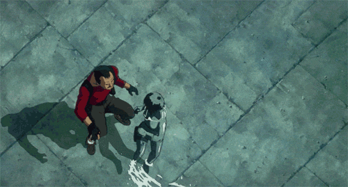

I may be a real stubborn person to deal with and i may have alot of disadvantages but i put up one hell of a battle because it the truest way to win but be discreet with it if you have you as well
Each and everyday you write code, you feel a really crazy surge of energy like your rising for stardom and continue to keep going hard and head on for this skillset and keep your foot on the gas and never let your foot off of it because from here on out only great things are here to come